Changes in PRIMAP-hist v2.6.1_final compared to v2.6_final for Afghanistan
2025-03-19
Johannes Gütschow
Change analysis for Afghanistan for PRIMAP-hist v2.6.1_final compared to v2.6_final
Overview over emissions by sector and gas
The following figures show the aggregate national total emissions excluding LULUCF AR6GWP100 for the country reported priority scenario. The dotted linesshow the v2.6_final data.
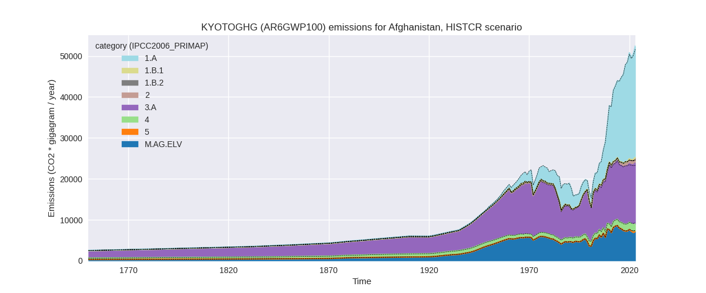
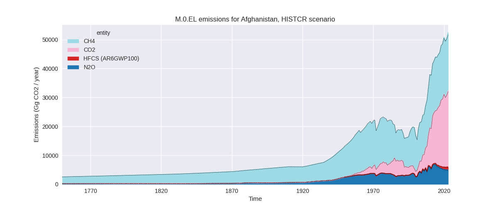
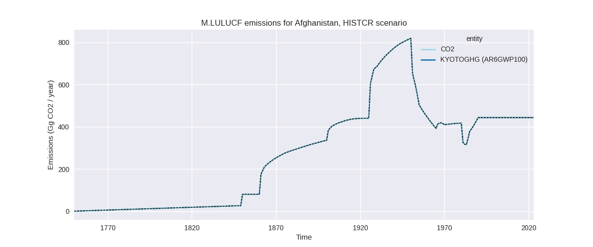
The following figures show the aggregate national total emissions excluding LULUCF AR6GWP100 for the third party priority scenario. The dotted linesshow the v2.6_final data.
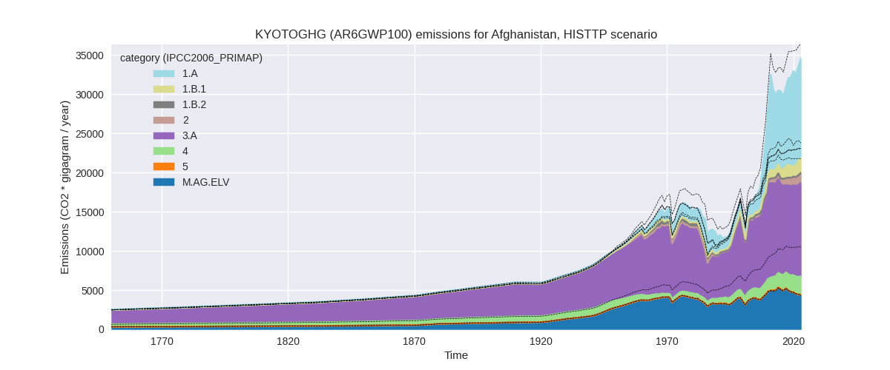
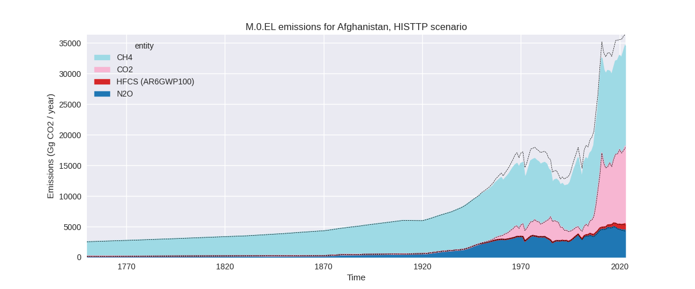
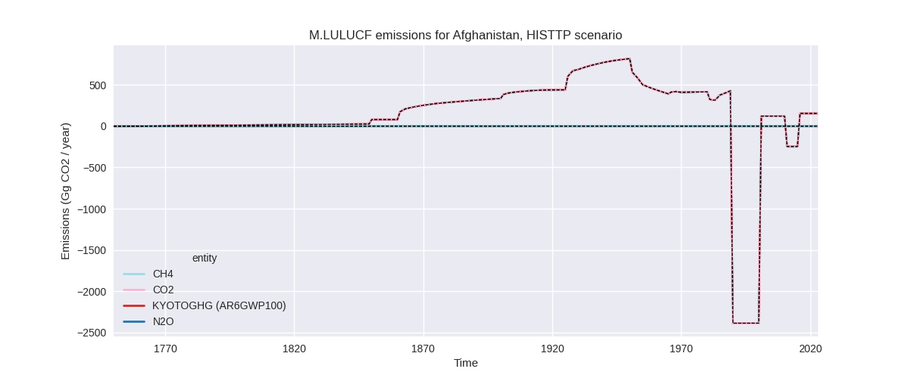
Overview over changes
In the country reported priority scenario we have the following changes for aggregate Kyoto GHG and national total emissions excluding LULUCF (M.0.EL):
- Emissions in 2023 have changed by 1.5%% (772.89 Gg CO2 / year)
- Emissions in 1990-2023 have changed by 0.2%% (47.14 Gg CO2 / year)
In the third party priority scenario we have the following changes for aggregate Kyoto GHG and national total emissions excluding LULUCF (M.0.EL):
- Emissions in 2023 have changed by -5.1%% (-1842.17 Gg CO2 / year)
- Emissions in 1990-2023 have changed by -9.2%% (-2214.30 Gg CO2 / year)
Most important changes per scenario and time frame
In the country reported priority scenario the following sector-gas combinations have the highest absolute impact on national total KyotoGHG (AR6GWP100) emissions in 2023 (top 5):
- 1: 3.A, CH4 with 813.63 Gg CO2 / year (5.8%)
- 2: M.AG.ELV, CH4 with -465.25 Gg CO2 / year (-14.2%)
- 3: M.AG.ELV, N2O with 197.99 Gg CO2 / year (4.8%)
- 4: 1.A, N2O with 100.75 Gg CO2 / year (56.2%)
- 5: 1.A, CH4 with 57.55 Gg CO2 / year (6.9%)
In the country reported priority scenario the following sector-gas combinations have the highest absolute impact on national total KyotoGHG (AR6GWP100) emissions in 1990-2023 (top 5):
- 1: 3.A, CH4 with 54.88 Gg CO2 / year (0.5%)
- 2: M.AG.ELV, CH4 with -29.07 Gg CO2 / year (-1.4%)
- 3: 1.A, N2O with 8.22 Gg CO2 / year (6.3%)
- 4: 1.A, CH4 with 5.10 Gg CO2 / year (1.0%)
- 5: 1.B.1, CO2 with 3.44 Gg CO2 / year (31.7%)
In the third party priority scenario the following sector-gas combinations have the highest absolute impact on national total KyotoGHG (AR6GWP100) emissions in 2023 (top 5):
- 1: 4, CH4 with -3851.79 Gg CO2 / year (-66.9%)
- 2: 1.B.1, CH4 with 1168.06 Gg CO2 / year (170.7%)
- 3: 3.A, CH4 with 650.88 Gg CO2 / year (5.8%)
- 4: M.AG.ELV, N2O with 177.78 Gg CO2 / year (5.0%)
- 5: M.AG.ELV, CH4 with -102.50 Gg CO2 / year (-14.2%)
In the third party priority scenario the following sector-gas combinations have the highest absolute impact on national total KyotoGHG (AR6GWP100) emissions in 1990-2023 (top 5):
- 1: 4, CH4 with -2479.60 Gg CO2 / year (-68.4%)
- 2: 1.B.1, CH4 with 235.65 Gg CO2 / year (49.2%)
- 3: 3.A, CH4 with 43.91 Gg CO2 / year (0.5%)
- 4: 1.B.2, CH4 with -29.90 Gg CO2 / year (-44.5%)
- 5: 5, N2O with 8.26 Gg CO2 / year (21.3%)
Notes on data changes
Here we list notes explaining important emissions changes for the country.
- No new country reported data. the CR time-series has small changes coming from the updated third party data that is used to cover periods not covered by country reported data.
- In the third party priority scenario emissions are lower in 2023 and cumulatively. The reason is that EDGAR 2024 data is much lower for all covered years than EDGAR 8.0.
- CH4 emissions in 1.B.1 are higher than in PRIMAP-hist v2.6, also due to the EDGAR update. *Agricultural emissions have changed for the latest years due to the updated FAOSTAT data.
Changes by sector and gas
For each scenario and time frame the changes are displayed for all individual sectors and all individual gases. In the sector plot we use aggregate Kyoto GHGs in AR6GWP100. In the gas plot we usenational total emissions without LULUCF.
country reported scenario
2023
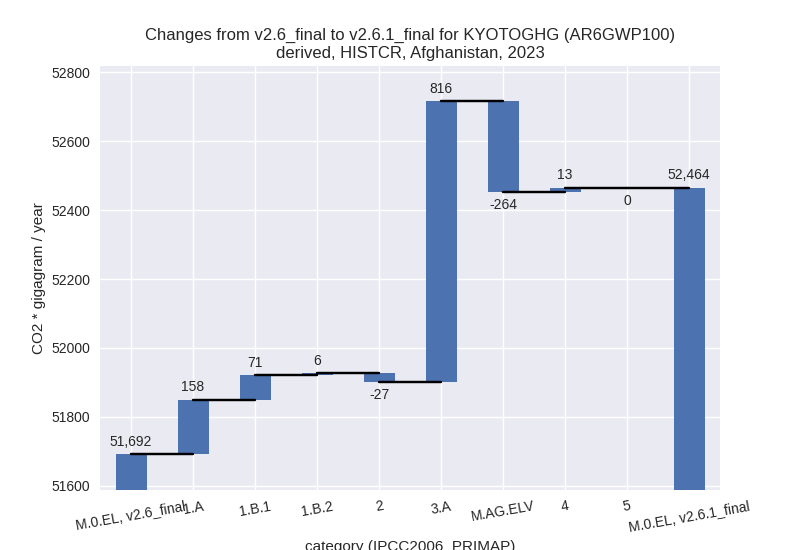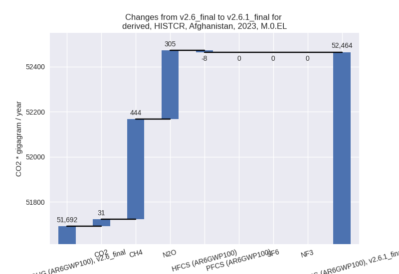
1990-2023
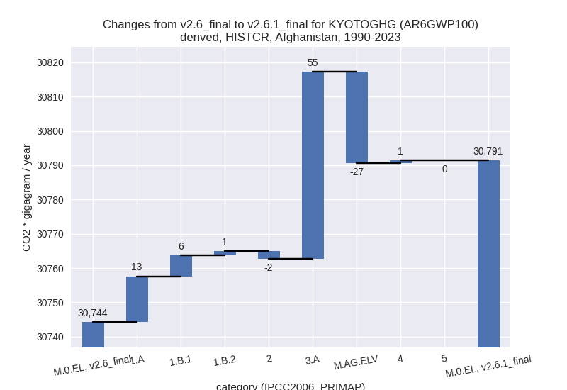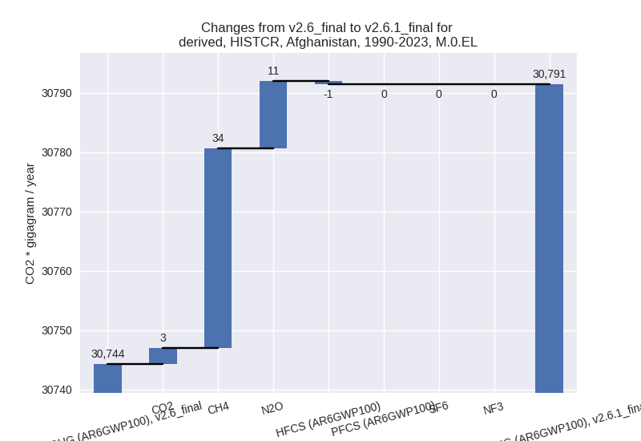
third party scenario
2023
 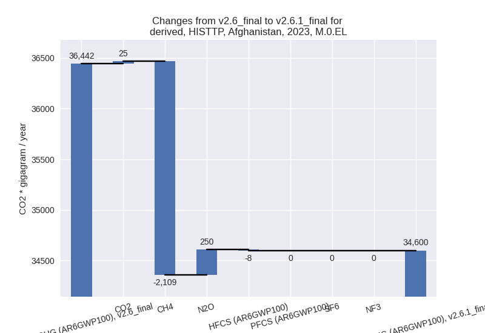
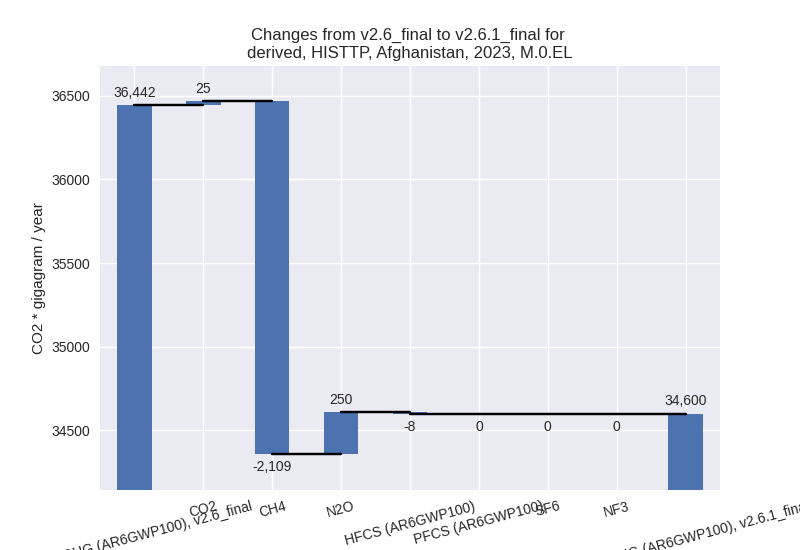
1990-2023
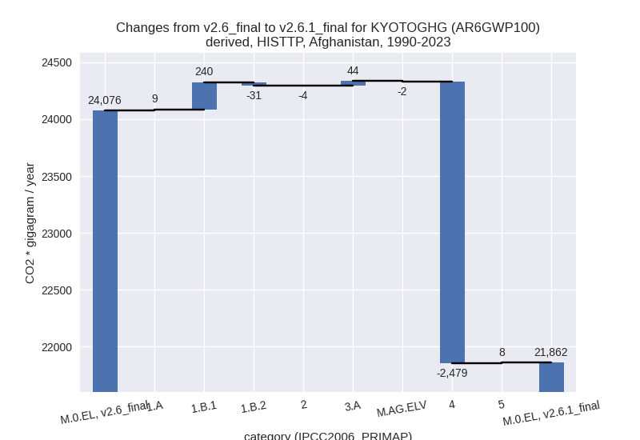
Detailed changes for the scenarios:
country reported scenario (HISTCR):
Most important changes per time frame
For 2023 the following sector-gas combinations have the highest absolute impact on national total KyotoGHG (AR6GWP100) emissions in 2023 (top 5):
- 1: 3.A, CH4 with 813.63 Gg CO2 / year (5.8%)
- 2: M.AG.ELV, CH4 with -465.25 Gg CO2 / year (-14.2%)
- 3: M.AG.ELV, N2O with 197.99 Gg CO2 / year (4.8%)
- 4: 1.A, N2O with 100.75 Gg CO2 / year (56.2%)
- 5: 1.A, CH4 with 57.55 Gg CO2 / year (6.9%)
For 1990-2023 the following sector-gas combinations have the highest absolute impact on national total KyotoGHG (AR6GWP100) emissions in 1990-2023 (top 5):
- 1: 3.A, CH4 with 54.88 Gg CO2 / year (0.5%)
- 2: M.AG.ELV, CH4 with -29.07 Gg CO2 / year (-1.4%)
- 3: 1.A, N2O with 8.22 Gg CO2 / year (6.3%)
- 4: 1.A, CH4 with 5.10 Gg CO2 / year (1.0%)
- 5: 1.B.1, CO2 with 3.44 Gg CO2 / year (31.7%)
Changes in the main sectors for aggregate KyotoGHG (AR6GWP100) are
- 1: Total sectoral emissions in 2022 are 25909.78 Gg CO2 / year which is 51.3% of M.0.EL emissions. 2023 Emissions have changed by 0.9% (235.38 Gg CO2 / year). 1990-2023 Emissions have changed by 0.2% (20.62 Gg CO2 / year).
- 2: Total sectoral emissions in 2022 are 1198.87 Gg
CO2 / year which is 2.4% of M.0.EL emissions. 2023 Emissions have
changed by -2.1% (-26.90 Gg CO2 /
year). 1990-2023 Emissions have changed by -0.4% (-2.21 Gg CO2 / year). For 2023 the
changes per gas
are:

- M.AG: Total sectoral emissions in 2022 are 21583.21
Gg CO2 / year which is 42.7% of M.0.EL emissions. 2023 Emissions have
changed by 2.6% (551.72 Gg CO2 /
year). 1990-2023 Emissions have changed by 0.2% (27.93 Gg CO2 / year). For 2023 the
changes per gas
are:
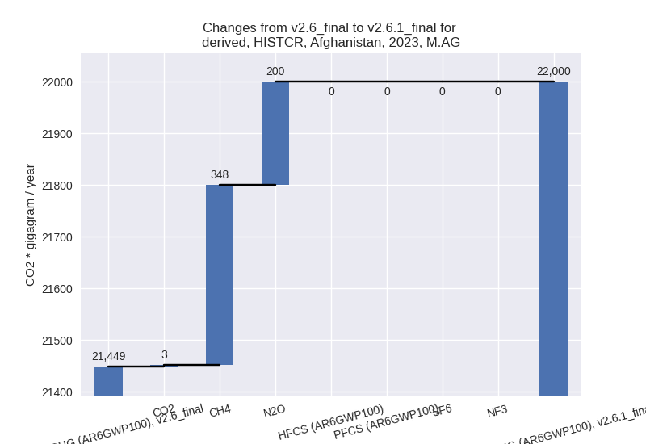
The changes come from the following subsectors:- 3.A: Total sectoral emissions in 2022 are 14667.90
Gg CO2 / year which is 68.0% of category M.AG emissions. 2023 Emissions
have changed by 5.8% (815.68 Gg CO2
/ year). 1990-2023 Emissions have changed by 0.5% (54.57 Gg CO2 / year). For 2023 the
changes per gas
are:
There is no subsector information available in PRIMAP-hist. - M.AG.ELV: Total sectoral emissions in 2022 are
6915.30 Gg CO2 / year which is 32.0% of category M.AG emissions. 2023
Emissions have changed by -3.6%
(-263.96 Gg CO2 / year). 1990-2023 Emissions have changed by -0.4% (-26.63 Gg CO2 / year). For 2023 the
changes per gas
are:
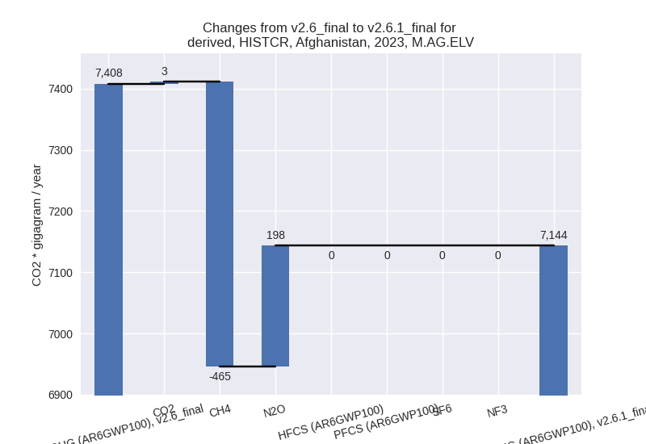
There is no subsector information available in PRIMAP-hist.
- 3.A: Total sectoral emissions in 2022 are 14667.90
Gg CO2 / year which is 68.0% of category M.AG emissions. 2023 Emissions
have changed by 5.8% (815.68 Gg CO2
/ year). 1990-2023 Emissions have changed by 0.5% (54.57 Gg CO2 / year). For 2023 the
changes per gas
are:
- 4: Total sectoral emissions in 2022 are 1833.20 Gg CO2 / year which is 3.6% of M.0.EL emissions. 2023 Emissions have changed by 0.7% (12.69 Gg CO2 / year). 1990-2023 Emissions have changed by 0.1% (0.79 Gg CO2 / year).
- 5: No data
third party scenario (HISTTP):
Most important changes per time frame
For 2023 the following sector-gas combinations have the highest absolute impact on national total KyotoGHG (AR6GWP100) emissions in 2023 (top 5):
- 1: 4, CH4 with -3851.79 Gg CO2 / year (-66.9%)
- 2: 1.B.1, CH4 with 1168.06 Gg CO2 / year (170.7%)
- 3: 3.A, CH4 with 650.88 Gg CO2 / year (5.8%)
- 4: M.AG.ELV, N2O with 177.78 Gg CO2 / year (5.0%)
- 5: M.AG.ELV, CH4 with -102.50 Gg CO2 / year (-14.2%)
For 1990-2023 the following sector-gas combinations have the highest absolute impact on national total KyotoGHG (AR6GWP100) emissions in 1990-2023 (top 5):
- 1: 4, CH4 with -2479.60 Gg CO2 / year (-68.4%)
- 2: 1.B.1, CH4 with 235.65 Gg CO2 / year (49.2%)
- 3: 3.A, CH4 with 43.91 Gg CO2 / year (0.5%)
- 4: 1.B.2, CH4 with -29.90 Gg CO2 / year (-44.5%)
- 5: 5, N2O with 8.26 Gg CO2 / year (21.3%)
Changes in the main sectors for aggregate KyotoGHG (AR6GWP100) are
- 1: Total sectoral emissions in 2022 are 13941.82 Gg
CO2 / year which is 41.5% of M.0.EL emissions. 2023 Emissions have
changed by 9.5% (1266.66 Gg CO2 /
year). 1990-2023 Emissions have changed by 3.5% (218.94 Gg CO2 / year). For 2023 the
changes per gas
are:
For 1990-2023 the changes per gas are:
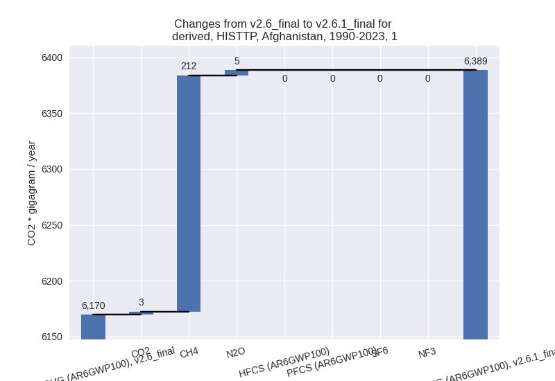
The changes come from the following subsectors:- 1.A: Total sectoral emissions in 2022 are 12057.02 Gg CO2 / year which is 86.5% of category 1 emissions. 2023 Emissions have changed by 0.4% (45.75 Gg CO2 / year). 1990-2023 Emissions have changed by 0.2% (9.45 Gg CO2 / year).
- 1.B.1: Total sectoral emissions in 2022 are 1845.85
Gg CO2 / year which is 13.2% of category 1 emissions. 2023 Emissions
have changed by 175.1% (1213.55 Gg
CO2 / year). 1990-2023 Emissions have changed by 48.8% (240.18 Gg CO2 / year). For 2023 the
changes per gas
are:
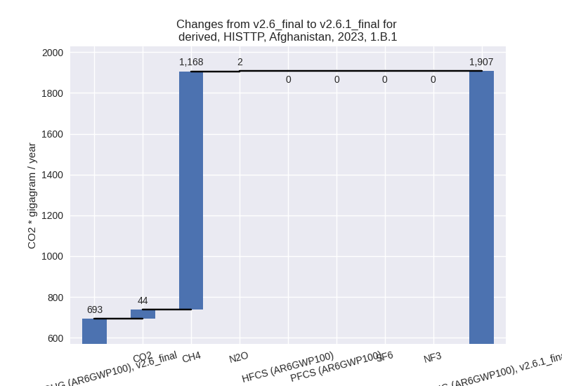
For 1990-2023 the changes per gas are:
There is no subsector information available in PRIMAP-hist. - 1.B.2: Total sectoral emissions in 2022 are 38.95
Gg CO2 / year which is 0.3% of category 1 emissions. 2023 Emissions have
changed by 24.3% (7.35 Gg CO2 /
year). 1990-2023 Emissions have changed by -39.8% (-30.69 Gg CO2 / year). For 2023
the changes per gas
are:
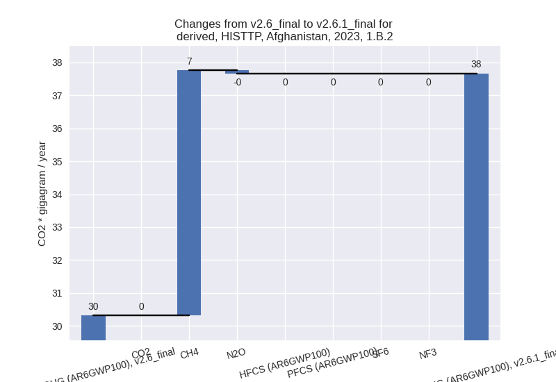
For 1990-2023 the changes per gas are:
There is no subsector information available in PRIMAP-hist.
- 2: Total sectoral emissions in 2022 are 1188.13 Gg
CO2 / year which is 3.5% of M.0.EL emissions. 2023 Emissions have
changed by -3.2% (-42.13 Gg CO2 /
year). 1990-2023 Emissions have changed by -0.8% (-4.08 Gg CO2 / year). For 2023 the
changes per gas
are:
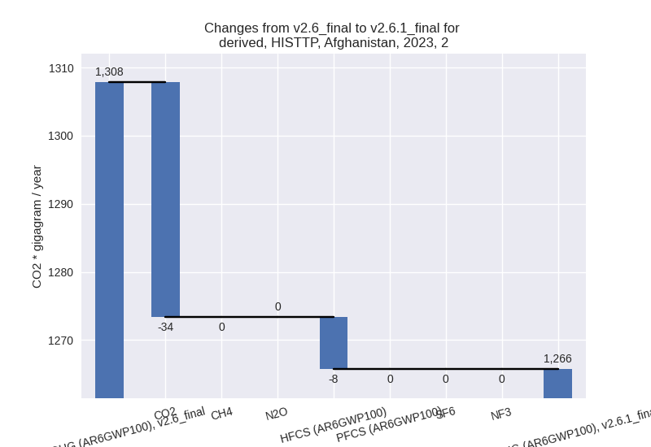 - M.AG: Total sectoral emissions in 2022 are 16096.56
Gg CO2 / year which is 48.0% of M.0.EL emissions. 2023 Emissions have
changed by 4.8% (743.07 Gg CO2 /
year). 1990-2023 Emissions have changed by 0.3% (41.53 Gg CO2 / year). For 2023 the
changes per gas
are:
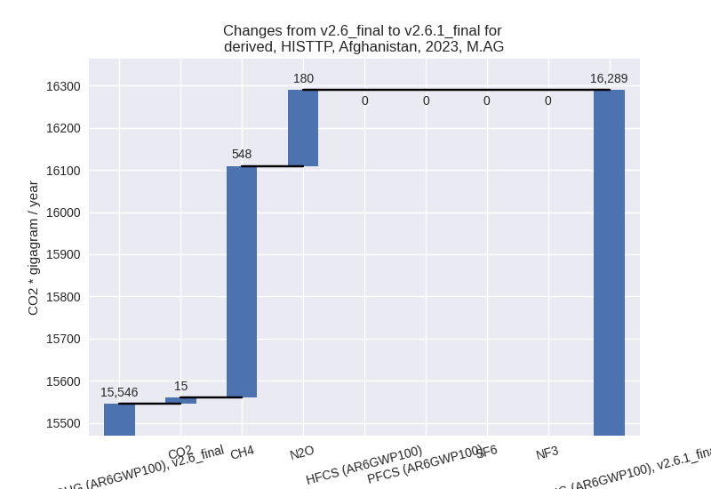
The changes come from the following subsectors:- 3.A: Total sectoral emissions in 2022 are 11742.17
Gg CO2 / year which is 72.9% of category M.AG emissions. 2023 Emissions
have changed by 5.8% (652.65 Gg CO2
/ year). 1990-2023 Emissions have changed by 0.5% (43.63 Gg CO2 / year). For 2023 the
changes per gas
are:
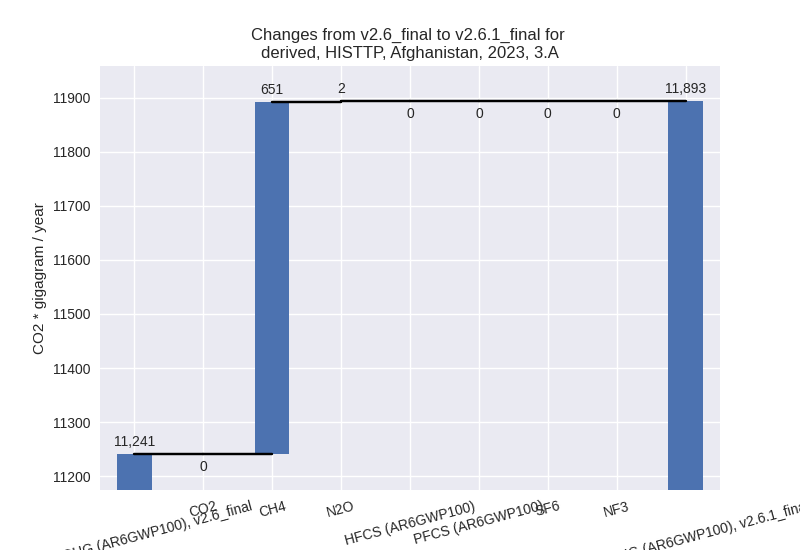
There is no subsector information available in PRIMAP-hist. - M.AG.ELV: Total sectoral emissions in 2022 are
4354.39 Gg CO2 / year which is 27.1% of category M.AG emissions. 2023
Emissions have changed by 2.1%
(90.42 Gg CO2 / year). 1990-2023 Emissions have changed by -0.1% (-2.10 Gg CO2 / year). For 2023 the
changes per gas
are:
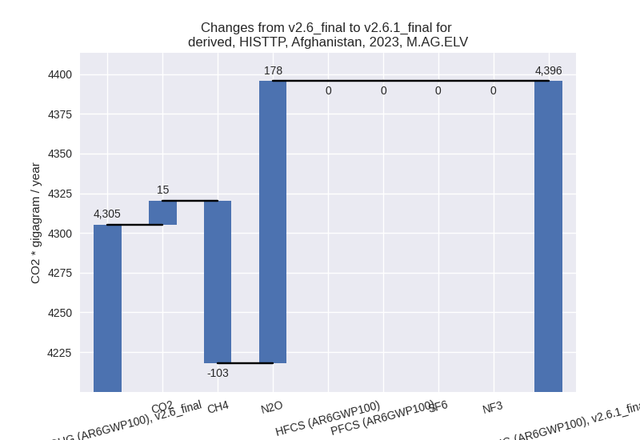
There is no subsector information available in PRIMAP-hist.
- 3.A: Total sectoral emissions in 2022 are 11742.17
Gg CO2 / year which is 72.9% of category M.AG emissions. 2023 Emissions
have changed by 5.8% (652.65 Gg CO2
/ year). 1990-2023 Emissions have changed by 0.5% (43.63 Gg CO2 / year). For 2023 the
changes per gas
are:
- 4: Total sectoral emissions in 2022 are 2255.15 Gg
CO2 / year which is 6.7% of M.0.EL emissions. 2023 Emissions have
changed by -62.5% (-3841.29 Gg CO2 /
year). 1990-2023 Emissions have changed by -63.8% (-2478.96 Gg CO2 / year). For 2023
the changes per gas
are:
For 1990-2023 the changes per gas are:
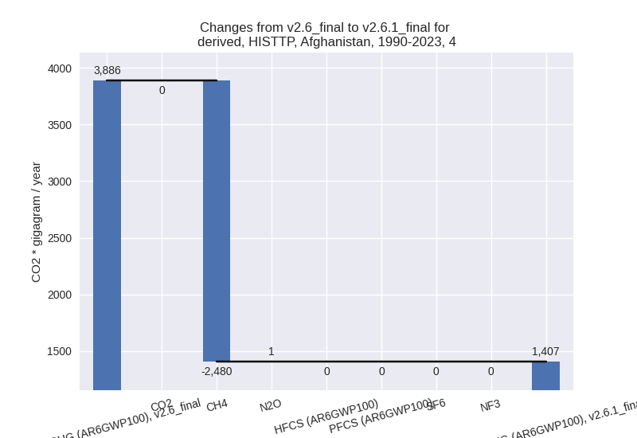 - 5: Total sectoral emissions in 2022 are 72.69 Gg
CO2 / year which is 0.2% of M.0.EL emissions. 2023 Emissions have
changed by 72.6% (31.51 Gg CO2 /
year). 1990-2023 Emissions have changed by 21.3% (8.26 Gg CO2 / year). For 2023 the
changes per gas
are:
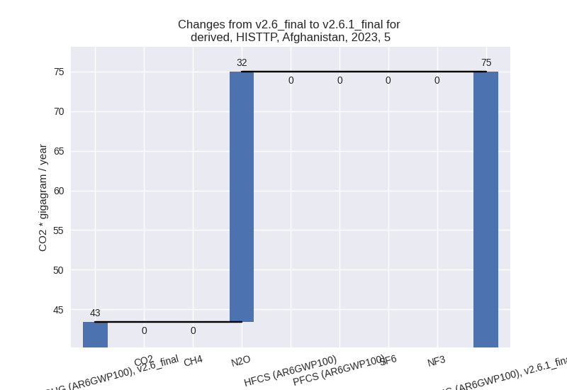
For 1990-2023 the changes per gas are:
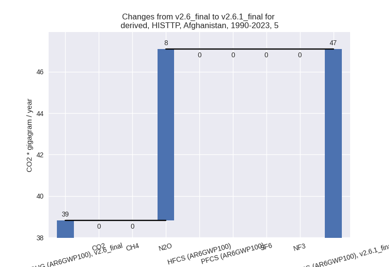